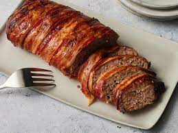

meatloaf

Description
Meatloaf is a dish of ground meat that has been combined with other ingredients and formed into the shape of a loaf,
then baked or smoked. The final shape is either hand-formed on a baking tray, or pan-formed by cooking it in a loaf pan,which tend to be the biggest diet trend these days,with many people cutting carbs to the extreme. Everyone knows that it is necessary to eat a balanced amount of carbs even if you aren’t on a keto diet, so it’s nice to
cut out carbs where you can. If you’re on a keto diet, you will need a good amount of recipes in your arsenal to keep
yourself happy and on track. One of the biggest reasons diets fail is lack of variety — no one wants to eat the same
things repeatedly. If you’re cooking for someone who’s eating keto, this is a meal that they will love since it’s not
every day you see a keto-friendly meatloaf. Meatloaf is comforting, and everyone needs that from a meal once in a while.
Plus, you won’t even know the carbs are missing.
What does meatloaf taste like?
If cooked correctly, it tastes like regular meat, but with the texture of bread. If made right, it tastes simply
amazing. all the flavors blend perfectly and it's very satisfying.
Ingredients
- 1 tablespoon good olive oil
- 3 cups chopped yellow onions (3 onions)
- 1 teaspoon chopped fresh thyme leaves
- 2 teaspoons kosher salt
- 1 teaspoon freshly ground black pepper
- 3 tablespoons Worcestershire sauce
- 1/3 cup canned chicken stock or broth
- 1 tablespoon tomato paste
- 2 1/2 pounds ground chuck (81 percent lean)
- 1/2 cup plain dry bread crumbs (recommended: Progresso)
- 2 extra-large eggs, beaten
- 1/2 cup ketchup (recommended: Heinz)
Steps
- Preheat the oven to 325 degrees F
- Heat the olive oil in a medium sauce pan. Add the onions, thyme, salt, and pepper and cook over medium-low heat
- stirring occasionally, for 8 to 10 minutes, until the onions are translucent but not brown
- Off the heat, add the
Worcestershire sauce, chicken stock, and tomato paste. Allow to cool slightly
- In a large bowl, combine the ground chuck, onion mixture, bread crumbs, and eggs, and mix lightly with a fork, Don't
mash or the meat loaf will be dense
- Shape the mixture into a rectangular loaf on a sheet pan covered with parchment paper
- Spread the ketchup evenly on top
- Bake for 1 to 1 1/4 hours, until the internal temperature is 160 degrees F and
the meat loaf is cooked through.(A pan of hot water in the oven, under the meat loaf, will keep the top from cracking.)
- Serve hot.